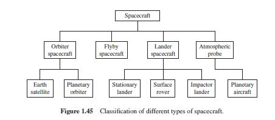

Spacecraft can be classified in a variety of ways, based on geometric configuration, type of propulsion, mission, or other factors. The following figure shows one such classification of spacecraft types, based primarily on the mission or function of the vehicle. Using this scheme, the spacecraft are classified as an orbiter, flyby spacecraft, lander, or atmospheric probe. Brief descriptions of these different types of spacecraft can be seen by navigating through the links below.
